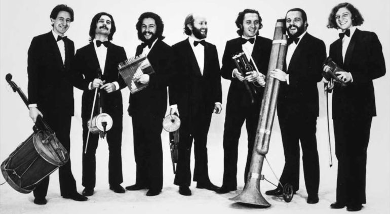

Los Comienzos
Durante los años 60, casi todas las facultades dentro de las universidades argentinas tenían su propio coro musical. Algunos de sus componentes adoptaron la costumbre de reunirse fuera de los ensayos con el fin de divertirse bastante preparando bromas musicales que después ellos mismos representarían en los festivales intercorales que tenían lugar a lo largo del curso, a modo de entreacto en tono de humor.
